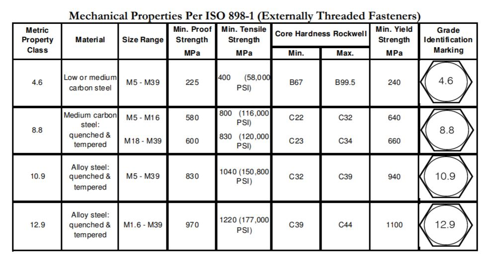
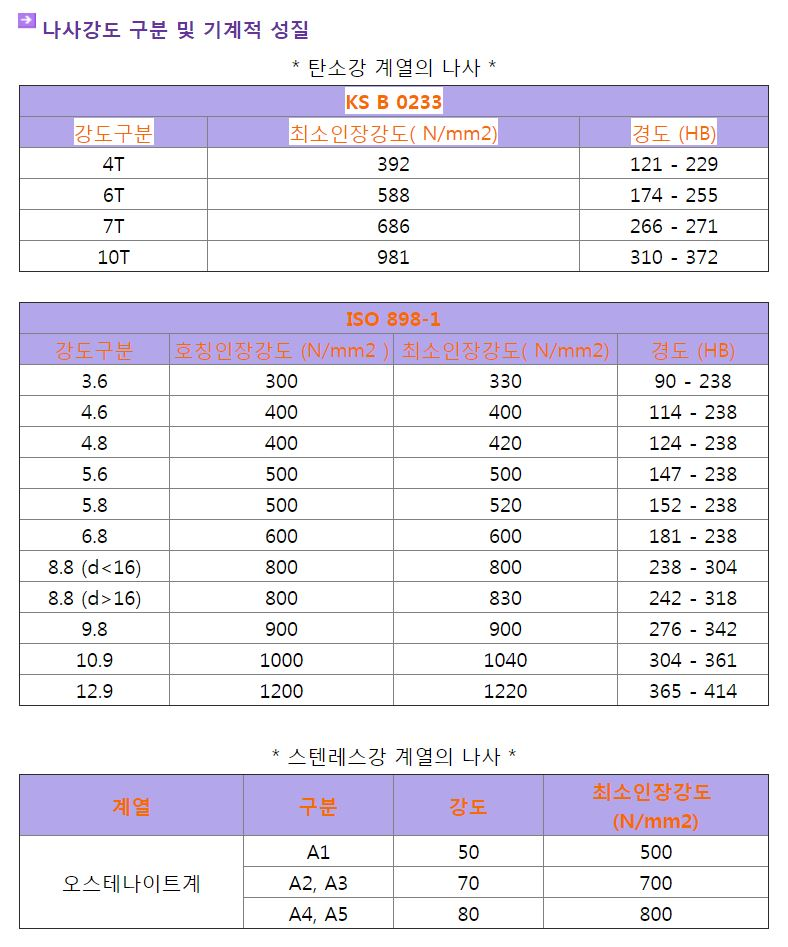

2019-06-05 17:27:11 Grade 10.9 Ref : https://m.blog.naver.com/PostView.nhn?blogId=komacomju&logNo=130134076795&proxyReferer=https%3A%2F%2Fwww.google.co.kr%2Fhttps://www.fullerfasteners.com/tech/mechanical-properties/https://www.fastenal.com/content/feds/pdf/Mechanical%20Properties%20of%20Metric%20Fasteners.pdfMechanical_Properties_of_Metric_Fasteners.pdf10.9 : S45C 8.8 : SCM435,SCM440 